And the sky watched it all unfold,
You know in the last few days, I've noticed something in me, it's that these days whenever I look at the sky, I'm reminded of you. How the colors change but it's the same sky, the same stars.
And the same night.
And somewhere in the midst of those nights, you're by that window, looking out. Looking out towards the sky. You couldn't wait for tomorrow, that's what I saw. I looked at the sky as well, just beside. 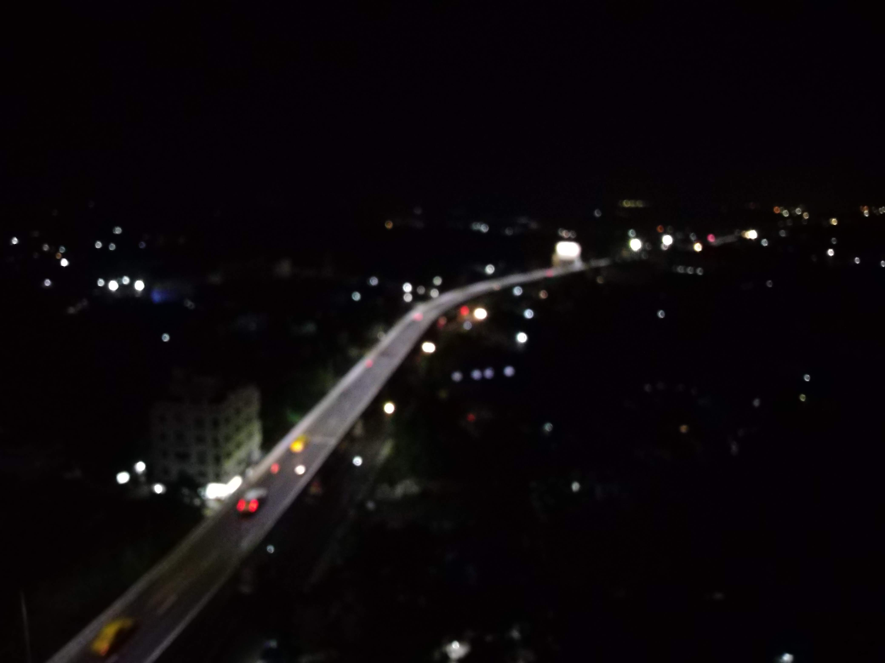 August 20th , 2019But let's not make excuses, there weren't a lot of stars out tonight. It was cloudy. Yet we looked, as if it were a game of pretend. Pretend as if the sky was the point, and all we wanted was to look out all night.
Remember how you jumped 9599594351 times to look at the sunset from the 4th floor ?
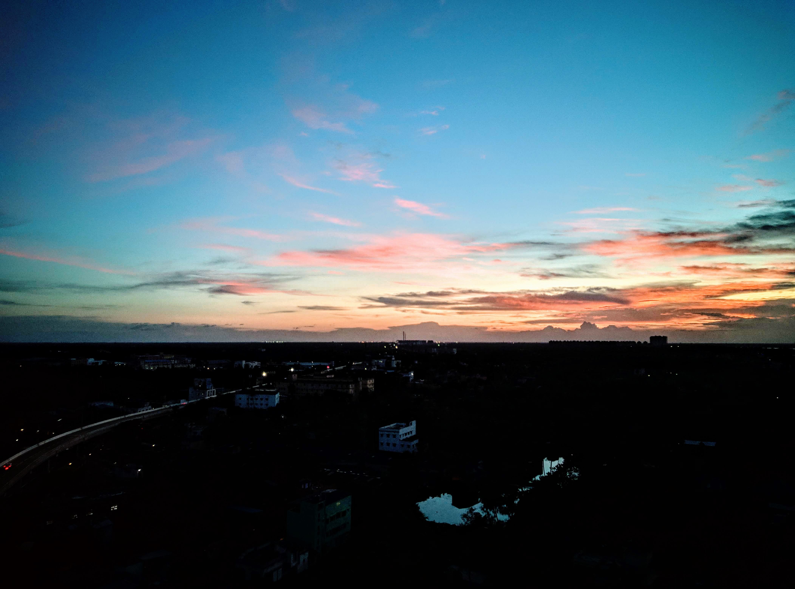 September 5th , 2019Hey you just left, and here I am sitting on the same stairs.
We saw the most amazing sunset today, the play of red and blue.As they played, little did they know that we were watching,
watching how one color turned into the other, slowly.
How red didn't realise that it was never red enough without the blue around. And how blue was all but empty space without the red.
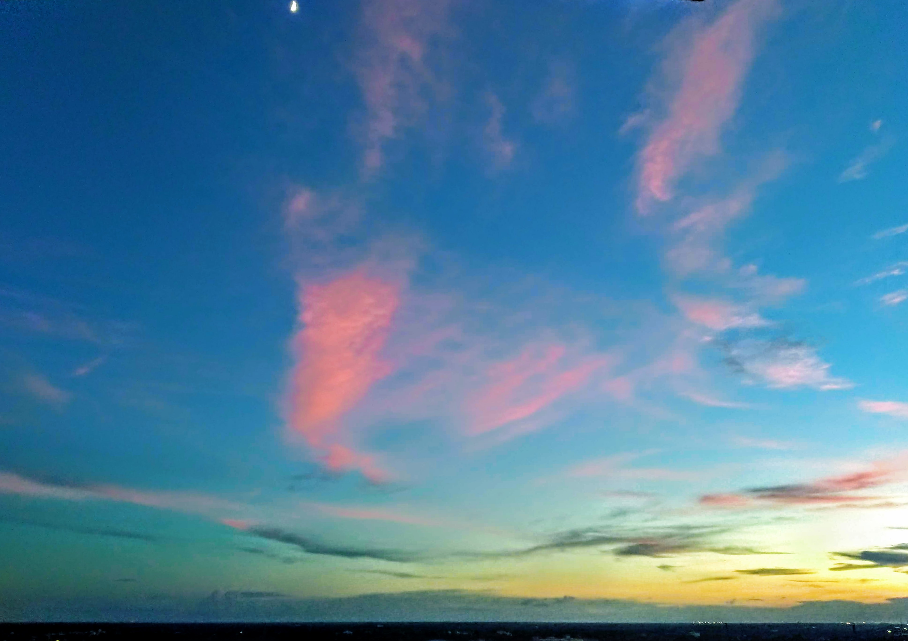As we laughed and gazed upon them, I wonder who laughed at us.
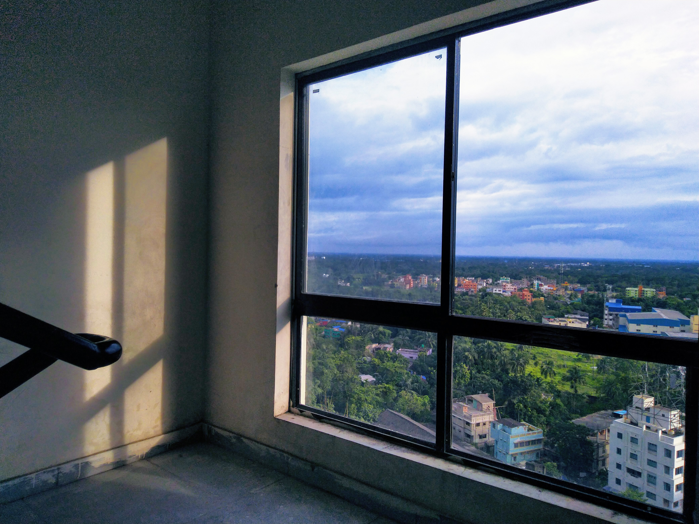You've given me the best days of my life actually. I don't know how you manage to make me so happy so easily.
Just by existing, Just by telling me to come meet, Just by sneaking pictures of me Just by complaining about all the small things in life, as if they ever mattered. Just by telling me to look at the sky
September 6th , 2019
Sent you to study for an hour, as I'm sitting downstairs. You were such a goofball today, not being able to climb through that small window. It was long since I've genuinely laughed over a person in front of me. Not because I'm expected to laugh, but because I felt like it. You were just standing and staring. As if I'd stay and wait. You told me not to look and somehow blamed me.
You were so worried about what you might face soon after you'd leave. But I was laughing at your situation. You won't laugh at it today. But as the years roll down the line, you'll tell me how right it was of me to laugh. Then you'll laugh looking back at this as well. These memories are so little. Like the inner side of the end of our school books, where we let our minds run free, nobody to judge Today was mostly me laughing and you complaining, but it was just as dreamy. And I wanted to pause it just as much. If you ever get your shit together and your mom stops scolding you for good, I'd bribe her so that she scolds again and you would keep complaining. 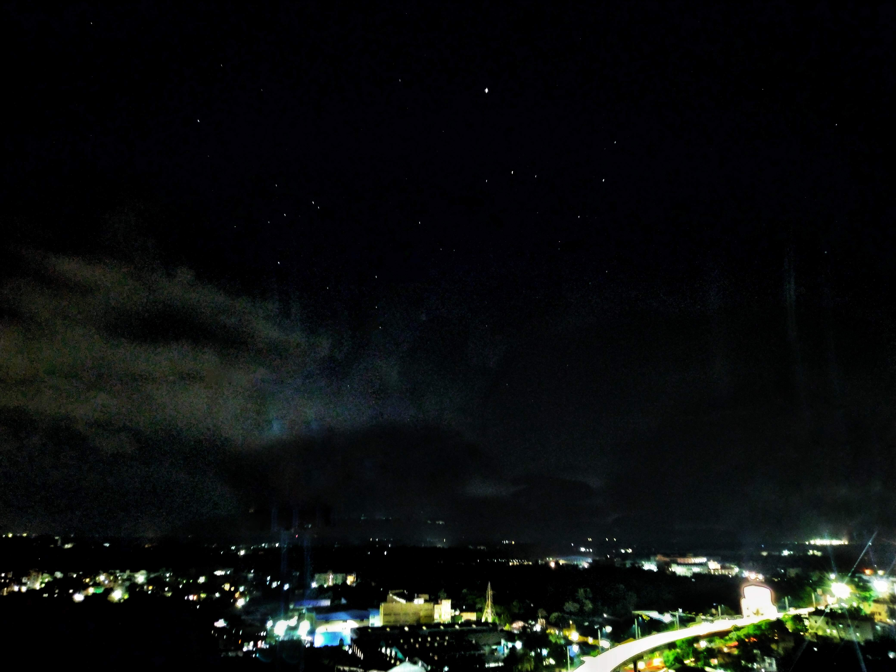 August 26th , 2019We were talking about being cheesy, and you went off to sleep just now. Most of what we say honestly are pretty cheesy. And you being dumb, you don't even realise how cheesy you are sometimes. But I won't tell you when you're being cheesy.
It was finally raining today, and I really wanted to stay up there. But that's what life is I guess. I smiled like a kid when you said "potato ? , home ?" You know what happens these days ? I'm working or doing something, suddenly I get reminded of the marshmallows and how you fooled me. Then I stop and melt. Yeah you stop smiling now 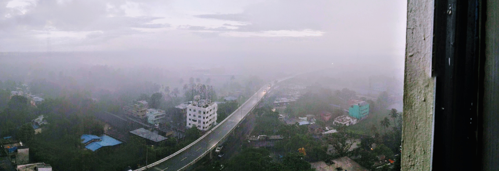 August 28th , 2019A few days back we were playing this game where we showed one starred message to the other.
I wish I could star things in real life. Like how you were screaming when you realised that the clouds were in fact moving from the left to the right. Or when you were stuck over that window, helplessly.Was it when I realised you wanted to surprise me with the marshmallows ?
Or when you told me to listen to "night we met" by the window ?
Maybe both
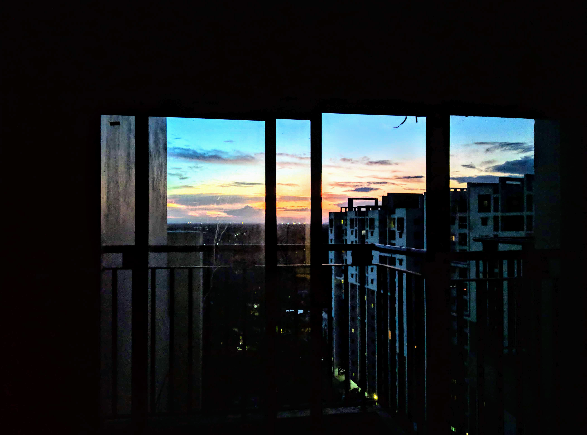 September 5th , 2019
Watch a horror movie and shit bricks Go to 14th legally at least once through the door Watch YJHD and those other movies you told me to Talk about everything after ten years And think about how amazing life turned out to be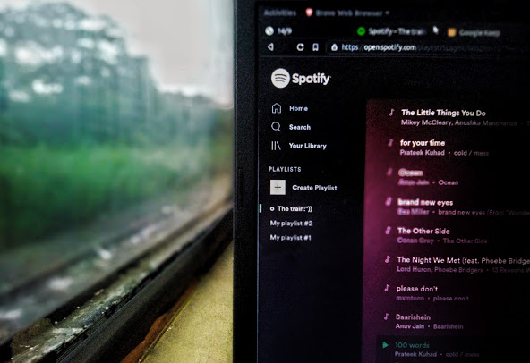 September 12th, 2019
I still cannot believe what's happening. I can never be grateful enough to you for being who you are.
But that's a different story, and you're turning eighteen today. You're becoming an adult. The world now expects you to be responsible and blah blah. But that's the easy part, I'll tell you about the hard part. The part which I think is the most important The hard part is that people get too lost in life, so lost that they forget to tell the people around to stick by. I'll tell you the reason of half the problems in the world, People think that showing others that they value them makes them less valuable. This problem is the result of people forgetting the fact that they don't really know when is the last time they'll see someone. I have a very few people around me. But I make sure that they know very well where they are. 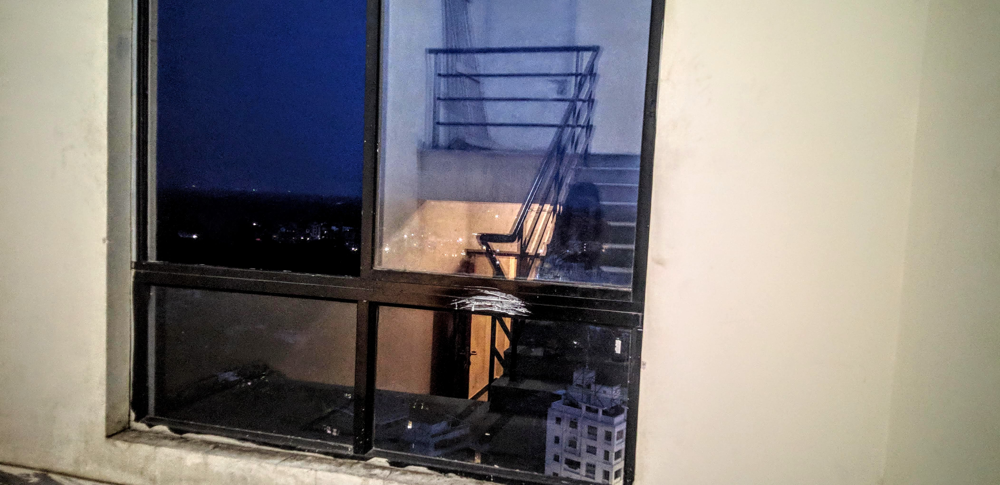 September 10th, 2019 This little ego that people have, everything disappears once they realise how nothing really matters in this world.And that in the end of it all, we'll be left with all but the memories. Memories of standing by that window as the wind blew by, memories of "legal or illegal, okay I'll try" memories of just standing by the wall because it was too high to scale memories of the pink clouds, and how you managed to surprise me with marshmallows. memories of listening to the same song together while looking out towards the open sky 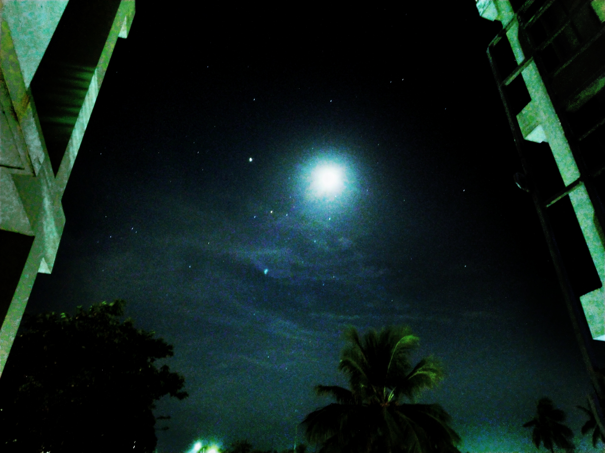 And one day, the very memory of you reading this. While it rains over the window nearby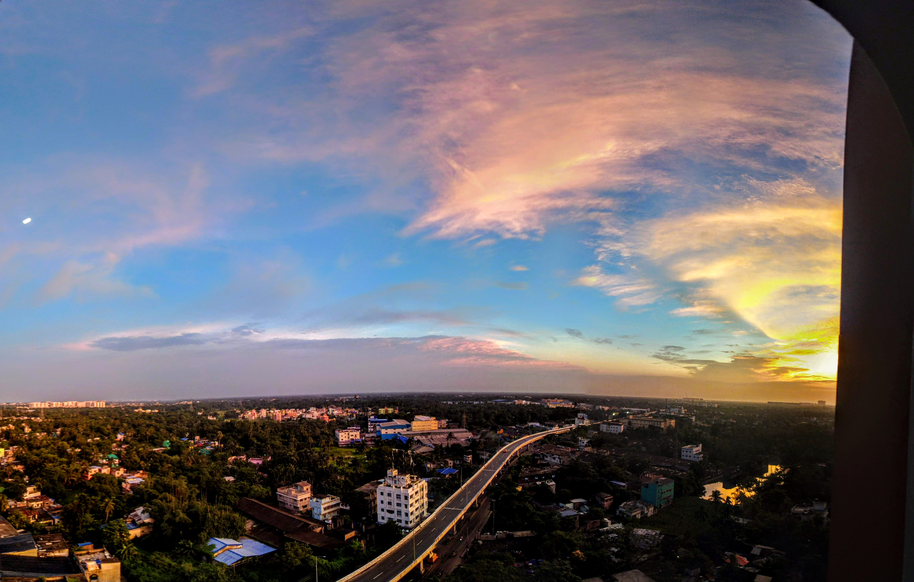
And what about me ? I'll just stand by that wall steep And watch the sunset's gleam Oh wait, I think I'm asleep And you're the dream .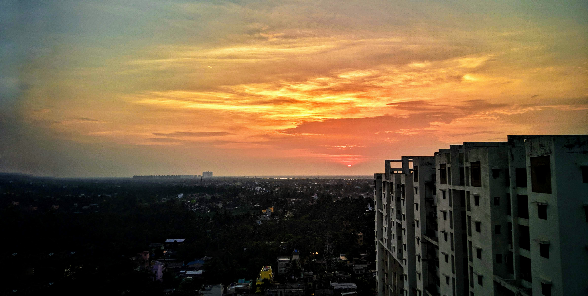
sleepy tighty birthday ching chong